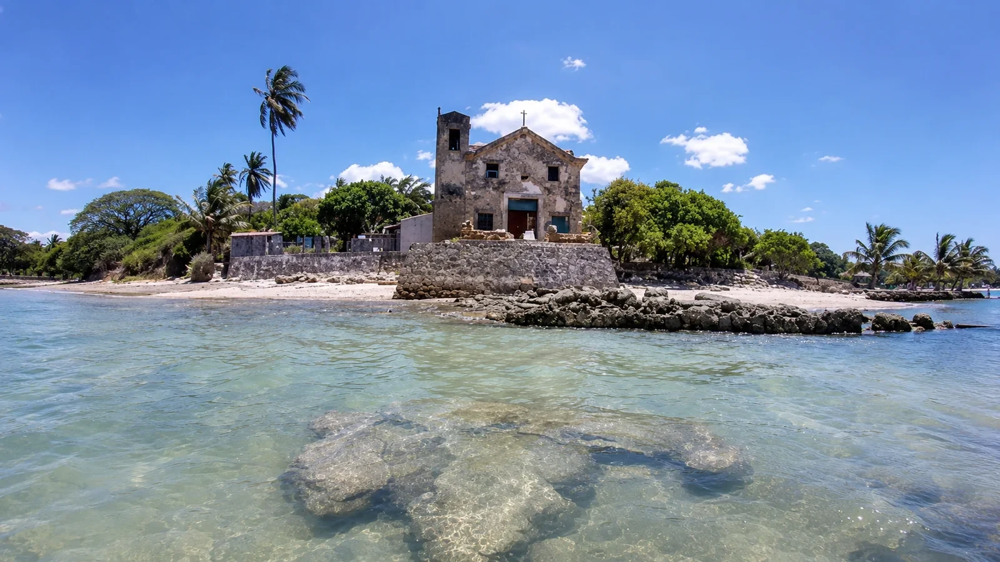
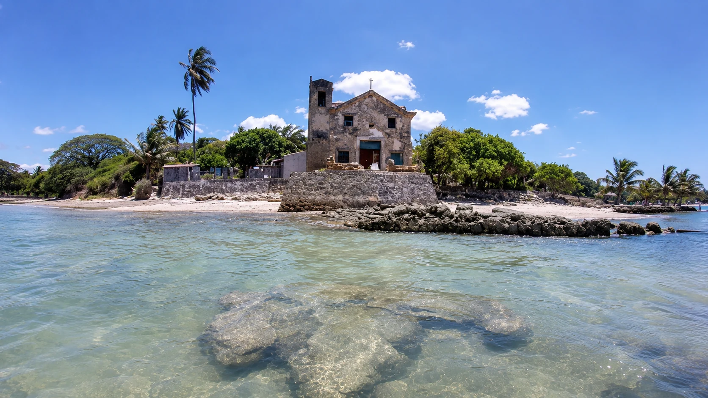
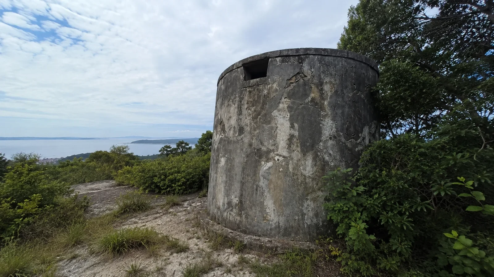
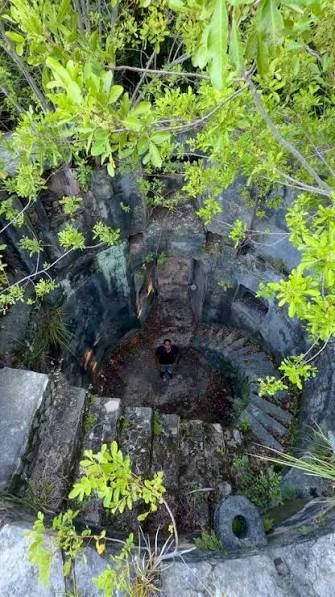
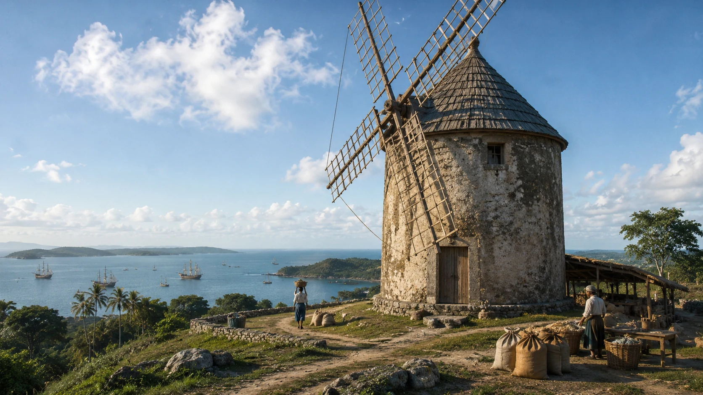

Ponta do Jaburu · mar, vento e patrimônio
Jaburu
Uma paisagem onde a memória da Capela de Santo Antônio dos Velasques e as ruínas do Moinho de Vento das Mercês atravessam séculos de história.
Imagem de abertura: representação visual contemporânea
Um território entre colina e baía
Patrimônio religiosoCapela rural tombada pelo Iphan, ligada à família Velasques.
Tecnologia do ventoRuínas de um moinho instalado estrategicamente em uma colina.
Paisagem culturalMar, vegetação, arquitetura e memória formam um único cenário histórico.
Jaburu guarda duas histórias monumentais
A Ponta do Jaburu reúne paisagem costeira, antigas propriedades rurais, caminhos de romeiros e vestígios de tecnologias movidas pelo vento.
A Capela de Santo Antônio dos Velasques está ligada a uma fazenda colonial e foi reconstruída no século XVIII. Em outra parte elevada da região, o Moinho de Vento das Mercês domina uma ampla vista da Baía de Todos-os-Santos e recorda formas antigas de produção.
Os dois patrimônios ajudam a contar como religião, agricultura, navegação e trabalho se encontravam no cotidiano da Ilha de Itaparica.

Fazendas, romarias, agricultura e circulação pela baía
A história de Jaburu está conectada às antigas propriedades rurais que ocupavam a costa oriental da Ilha de Itaparica.
A Capela de Santo Antônio dos Velasques teria sido construída provavelmente no século XVII, nas terras da Fazenda Santo Antônio, pertencente à família Velasques. Em meados do século XVIII, a capela foi reconstruída e recebeu casas anexas destinadas aos romeiros e à residência do capelão.
Nas proximidades de Jaburu e Mercês, a paisagem também preserva a torre do antigo moinho de vento. Um registro da Freguesia de Santa Vera Cruz, datado de 1757, menciona a Capela de Nossa Senhora das Mercês e poucos moradores naquele setor.
A região, portanto, reunia fé, moradia, produção agrícola e caminhos de circulação. Hoje, as ruínas transformam essa história em uma espécie de arquivo aberto, exposto ao vento e ao mar.
Capela em terras dos Velasques
Origem provável do templo rural ligado à Fazenda Santo Antônio.
Reconstrução e acolhimento
A capela ganhou anexos para romeiros e residência do capelão.
Registro das Mercês
A relação da freguesia menciona a capela de Nossa Senhora das Mercês e poucos moradores.
Proteção patrimonial
O processo de tombamento da capela foi aberto em 1941 e a inscrição ocorreu em 1962.
Patrimônios em risco
As ruínas pedem pesquisa, proteção e visitação responsável.
Por que o nome Jaburu?
Um nome indígena que pode guardar a memória das aves
A palavra jaburu tem origem indígena e é usada para designar a ave também conhecida como tuiuiú.
Não foi localizado um documento conclusivo explicando por que a localidade recebeu esse nome. Uma hipótese tradicional é que a denominação esteja relacionada à presença antiga dessas aves, ou de aves semelhantes, em áreas úmidas, costeiras e de manguezal.
Por responsabilidade histórica, a página apresenta essa associação como hipótese toponímica, e não como origem definitivamente comprovada.
Capela de Santo Antônio dos Velasques
Uma capela rural ligada à história de fazendas, romarias e devoção na Ilha de Itaparica.
Uma capela de fazenda à beira-mar
Segundo a descrição patrimonial baseada no Iphan, a construção ocorreu provavelmente no século XVII, nas terras da fazenda de propriedade dos Velasques.
Em meados do século XVIII, o edifício foi reconstruído. Casas anexas serviam de pouso para romeiros e de residência para o capelão.
O conjunto foi inscrito no Livro do Tombo Histórico em 30 de janeiro de 1962, incluindo o seu acervo.
Nave única, coro, capela-mor, sacristia e outras salas.
Dava acesso ao púlpito, ao coro e à antiga sineira.
O frontão e as janelas do coro marcam a composição principal.
Processo 332-T-1941, com inscrição histórica nº 335.
Moinho de Vento das Mercês
Uma torre cilíndrica em posição elevada, construída para capturar os ventos que atravessam a ilha.

A ruína encontra-se sobre uma colina próxima a Jaburu, em posição dominante sobre a Baía de Todos-os-Santos e o Recôncavo.
Essa localização não era casual: o ponto elevado favorecia a captação dos ventos necessários para movimentar as pás e acionar o mecanismo interno de moagem.
Fontes locais relacionam o moinho ao processamento de cereais, especialmente trigo. Como parte do maquinário não sobreviveu, reconstruções visuais devem ser entendidas como hipóteses educativas.
A estrutura remanescente preserva a torre cilíndrica e vestígios do interior, funcionando hoje como fonte histórica sobre trabalho, tecnologia e produção.


Lendas e memórias de Jaburu
Narrativas culturais e possibilidades de pesquisa comunitária, apresentadas sem confundi-las com fatos documentados.
O moinho que cantava no vento
No imaginário popular, o som das antigas pás e engrenagens poderia ser ouvido de longe, misturando-se ao assobio do vento sobre a colina.
Recriação narrativa inspirada na função do moinho.As luzes dos romeiros
A memória da capela e das casas de pouso inspira histórias sobre pequenas luzes vistas à noite, como se antigos romeiros ainda procurassem abrigo.
Narrativa de caráter simbólico, não documentada.A ave que deu nome ao lugar
Uma hipótese popular associa Jaburu às grandes aves de áreas úmidas. Essa explicação ainda precisa ser confirmada por documentos ou relatos antigos.
Hipótese toponímica baseada na origem da palavra.Fatos importantes
A Capela dos Velasques possui proteção federal e inscrição no Livro do Tombo Histórico.
O templo nasceu em terras de fazenda e acompanhava a organização das propriedades coloniais.
Casas anexas foram construídas para acolher visitantes e o capelão.
O moinho foi instalado em posição elevada para aproveitar melhor a circulação do ar.
O local do moinho domina uma ampla extensão da Baía de Todos-os-Santos.
Um registro paroquial menciona a capela de Nossa Senhora das Mercês e poucos moradores.
Jaburu é palavra de origem indígena associada a uma ave de grande porte.
Ruínas costeiras e estruturas abandonadas exigem preservação e visitação responsável.
Galeria do patrimônio
Clique nas imagens para ampliar.
Memória coletiva
Vozes de Jaburu
Conte uma história sobre a capela, o moinho, a praia, as famílias antigas ou as tradições da localidade.
Mural da comunidade
0 publicaçõesMemórias compartilhadas
Conectando ao mural...
Pesquisa e responsabilidade
Fontes da página
- Iphan e iPatrimônio: tombamento, história e arquitetura da Capela de Santo Antônio dos Velasques.
- Patrimônio de Influência Portuguesa: localização e referências históricas do Moinho de Vento das Mercês.
- Plano de Gestão Municipal do Turismo de Vera Cruz: reconhecimento do moinho e de sua vista como atrativos locais.
- Imagens fornecidas ao projeto Conecta Vera Cruz.
Observação: as imagens da capela e do moinho completo são representações visuais contemporâneas. Elas não devem ser confundidas com fotografias históricas ou reconstruções arqueológicas oficiais.